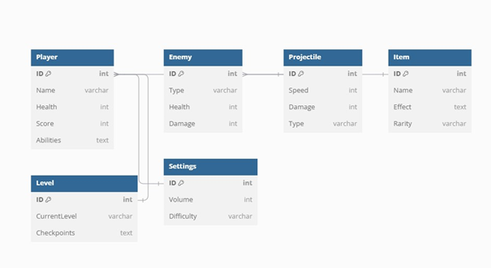
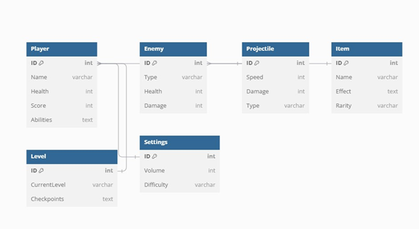

3. Adatmodellek
3.1 Adatbázis-kezelő kiválasztása
A rendszer INI fájlokat használ a mentési állapotok és beállítások kezelésére. A választás mögötti okok:

3.3 Relációs Adatmodell

3.4. Az adatbázis kezelővel kapcsolatot tartó osztályok

A rendszer INI fájlokat használ a mentési állapotok és beállítások kezelésére. A választás mögötti okok:
- Könnyű integráció: Az INI fájlok támogatása beépített a Godot játékmotorba.
- Olvashatóság: Könnyen szerkeszthető és emberi szemmel olvasható formátum.
- Rugalmasság: A struktúra könnyen bővíthető.
A játék osztályainak és attribútumainak kapcsolata az alábbiak szerint épül fel:
Entitánsok:- Player: A játékos karakter tulajdonságait tartalmazza.
- Enemy: Az ellenségek típusait és tulajdonságait írja le.
- Projectile: A lövedékek attribútumait tartalmazza.
- Item: A gyűjthető tárgyak.
- Level: A szintek és ellenőrző pontok adatai.
- Settings: A játék beállításai.
3.3 Relációs Adatmodell
A relációs modell az adatbázis táblák közötti kapcsolatokat ábrázolja.
Táblák:- Player: Azonosító, név, egészség, pontszám, képességek.
- Enemy: Azonosító, típus, egészség, sebzés.
- Projectile: Azonosító, sebesség, sebzés, típus.
- Item: Azonosító, név, hatás, ritkaság.
- Level: Azonosító, aktuális szint, ellenőrző pontok.
- Settings: Azonosító, hangerő, nehézségi szint.

3.4. Az adatbázis kezelővel kapcsolatot tartó osztályok